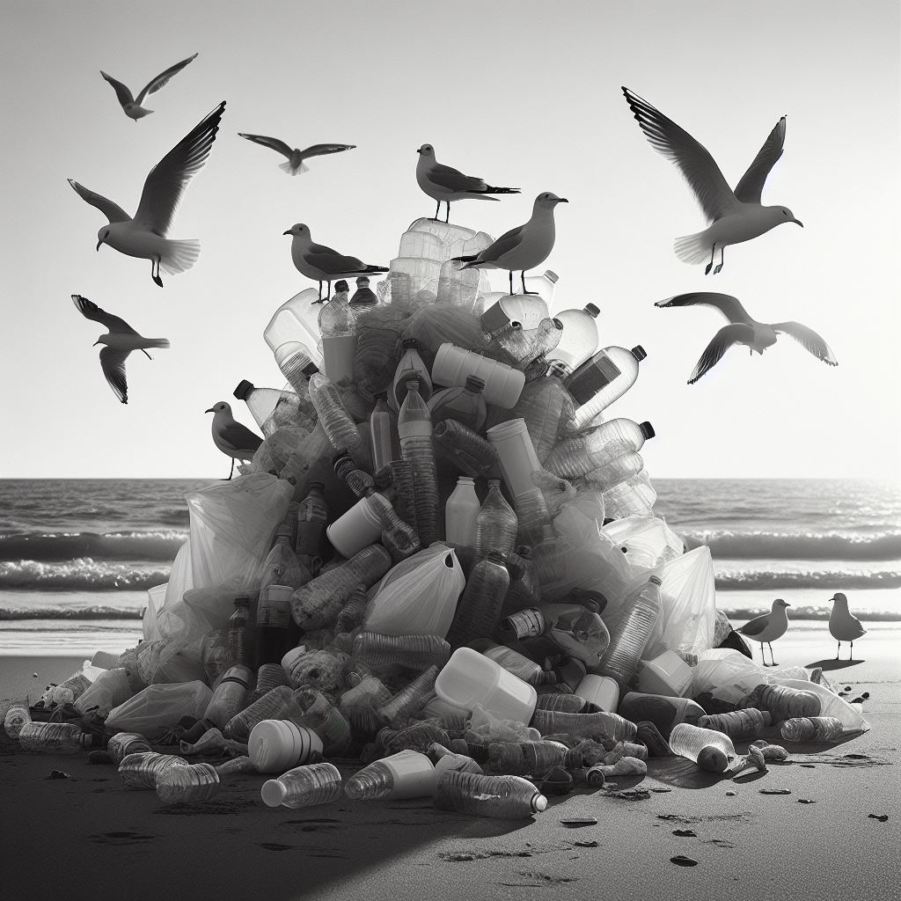
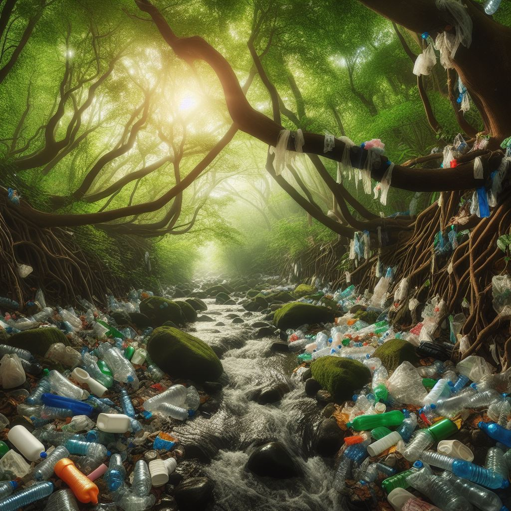
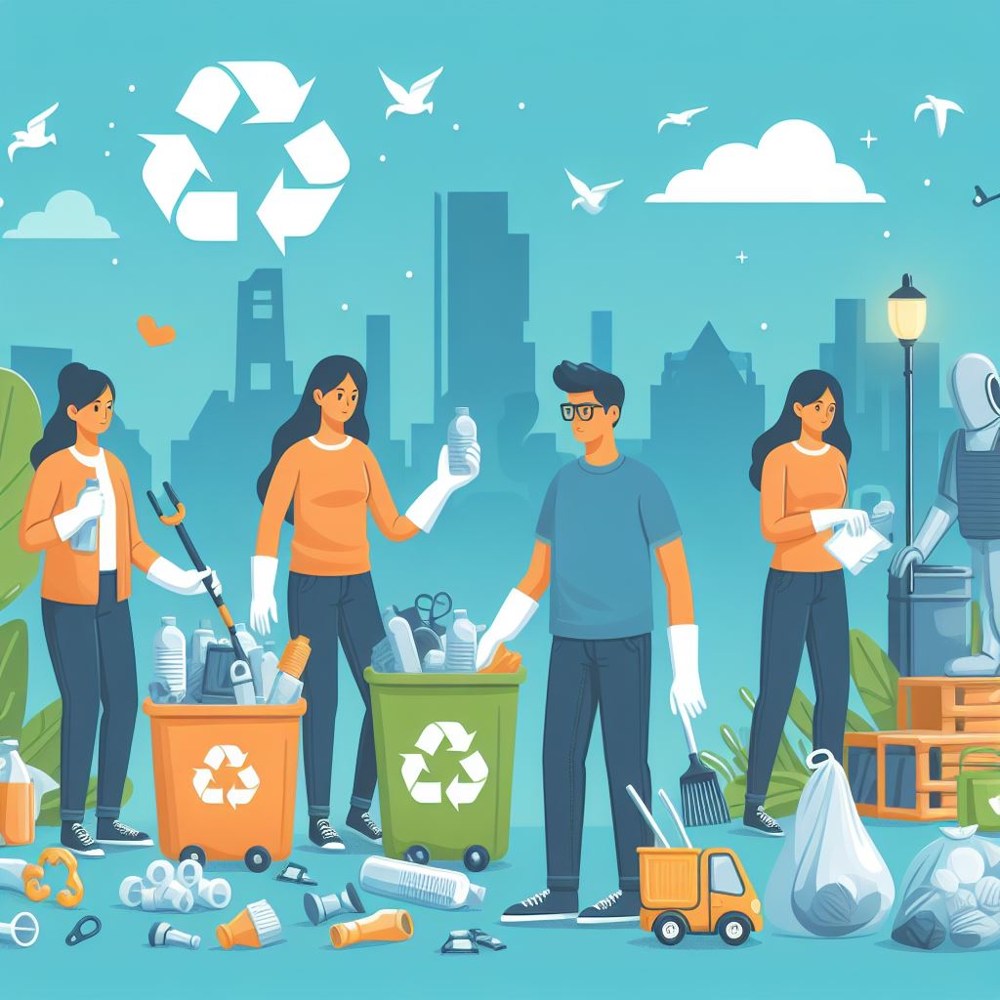

Welcome to our website about plastic waste. Here you will find information about the problem, its impact, and potential solutions. We aim to raise awareness about the severity of plastic pollution and inspire action towards a more sustainable future.
Our website provides a comprehensive overview of the issue, from the causes and effects of plastic waste to the various strategies being employed to combat it. We hope that this information will serve as a valuable resource for those interested in learning more about this pressing environmental issue.
Together, we can make a difference. Let's work towards a world free of plastic waste.
Plastic waste is a serious environmental issue. Every year, millions of tons of plastic waste end up in our oceans, causing harm to marine life and polluting our waters. Plastics take hundreds of years to decompose, leading to long-lasting environmental damage. Furthermore, the production of plastics contributes to greenhouse gas emissions, exacerbating climate change. The problem is further compounded by the fact that only a small percentage of plastic waste is recycled worldwide.
Plastic waste comes in many forms, from single-use items like bags and straws to microplastics, tiny particles less than five millimeters in size. These microplastics can be ingested by marine life, entering the food chain and potentially posing a risk to human health.
Moreover, plastic waste is not just an ocean problem. It's found in our rivers, lakes, and even in the air we breathe. It's a global issue that requires urgent attention.
The impact of plastic waste on our environment is devastating. It not only pollutes our waters but also contributes to climate change by releasing harmful greenhouse gases when it breaks down.
Marine life, in particular, suffers greatly from plastic pollution. Animals can become entangled in larger pieces of plastic waste, while smaller particles are often mistaken for food and ingested, causing injury or death.
Furthermore, plastic waste contributes to habitat destruction, as it can smother delicate ecosystems and alter the physical environment. The long-term effects of plastic pollution on biodiversity and ecosystem health are still not fully understood, but the evidence so far suggests they could be significant.
There are many solutions to the plastic waste problem. These include reducing our use of single-use plastics, recycling more, and cleaning up existing plastic waste from our environment.
On an individual level, we can make a difference by making conscious choices to reduce, reuse, and recycle. This could involve using reusable shopping bags, avoiding products with excessive packaging, and recycling whenever possible.
On a larger scale, governments and businesses have a crucial role to play. This can involve implementing policies to reduce plastic production, investing in recycling infrastructure, and funding research into alternative, eco-friendly materials.
If you have any questions or suggestions, please feel free to contact us at aditya.raj60104@gmail.com.
We value your feedback and are always looking for ways to improve our website. Whether you have a suggestion for a topic we should cover, or a question about plastic waste, we'd love to hear from you.
Together, we can make a difference in the fight against plastic waste. Thank you for your support.